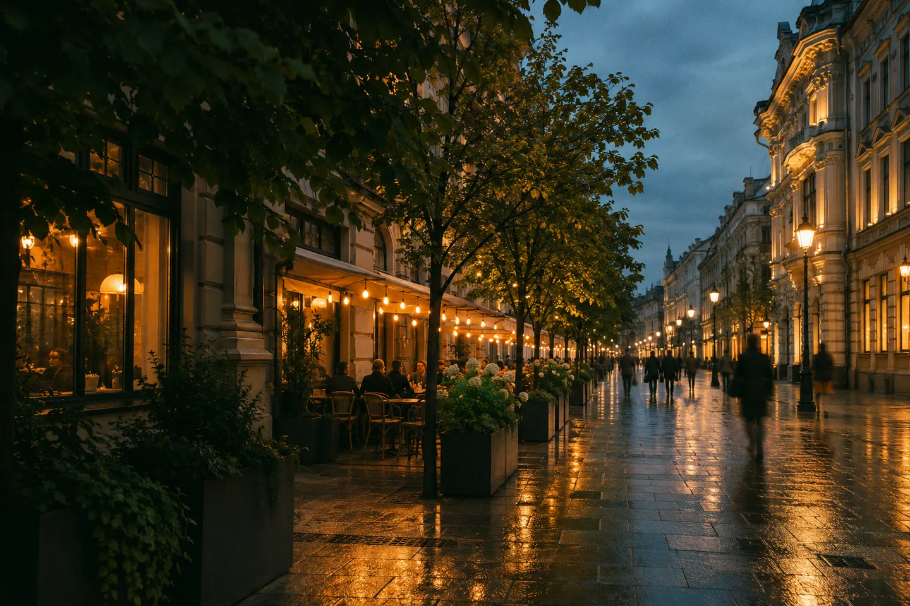

Загружаем каталог… Если страница не открывается, обновите её или скачайте автономную версию.
Куда сходить?
Сходи (SHODI) — городской путеводитель. Выберите город и найдите места для следующей прогулки.

Города — DaData / HFLabs (CC BY-SA 4.0). Подборки по отзывам — Яндекс Карты, 2023.
- Остановки
- Время на местах
- Посещено
Остановки
Добавьте первое место для прогулки.
Куда пойдём?
Создайте маршрут и добавьте места, которые хотите посетить.